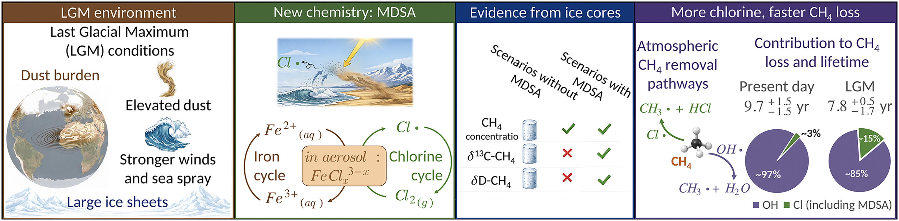

Daphne Meidan, PhD
Atmospheric Chemistry • Earth System Modeling • Climate Interactions
Postdoctoral Researcher
Department of Atmospheric Chemistry and Climate
Instituto de Química Física Blas Cabrera (IQF-CSIC)
Consejo Superior de Investigaciones Científicas (CSIC), Spain
About
I investigate how atmospheric composition responds to environmental and climatic change through the integration of Earth system modeling, atmospheric observations, laboratory and field measurements, isotopic tracers, and geochemical constraints.
My research spans atmospheric chemistry, methane-climate feedbacks, dust and halogen chemistry, stable isotopes, Earth system modeling, air quality, and environmental impacts on ecosystems and society.
Research Highlights
Featured Science

Dust-mediated chlorine chemistry and methane cycling during the Last Glacial Maximum.
Atmospheric Oxidation
Understanding methane, ozone, OH, and chlorine chemistry.
Earth System Modeling
Using CESM and advanced chemistry-climate simulations.
Air Quality & Climate
Connecting atmospheric change to ecosystems, agriculture, and human health.
Featured Publications
- Science – Dust-mediated chlorine chemistry during the Last Glacial Maximum
- Nature Communications – Methane removal through chlorine-mediated climate-chemistry interactions
- AGU Advances – Global ozone reduction driven by dust-catalyzed halogen chemistry
- COVID-19 air quality impacts
Awards
- SAERI Fellowship
- Simon Reich Memorial Award